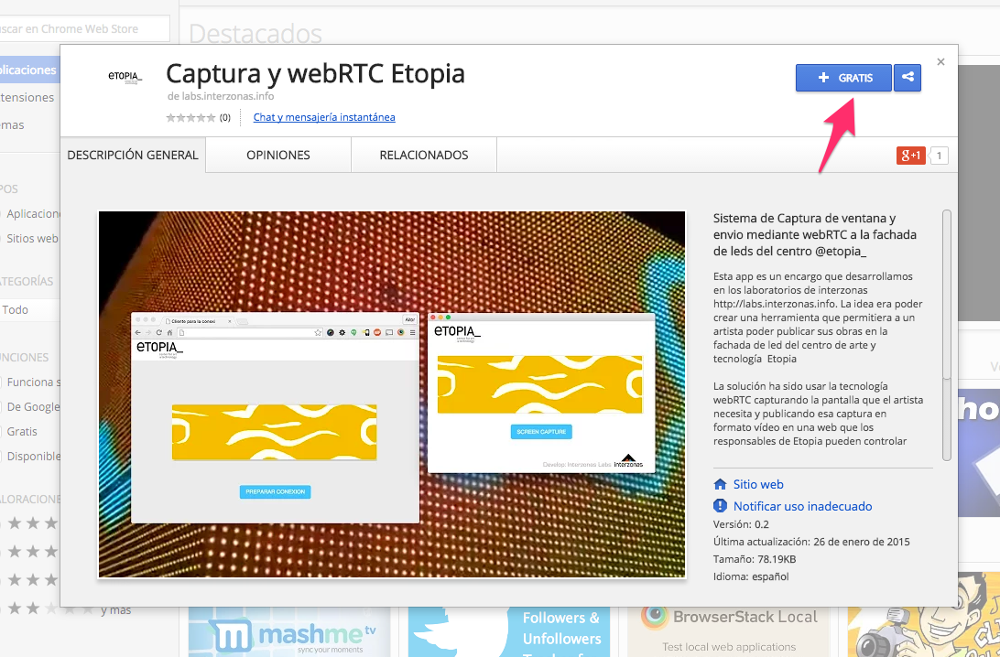
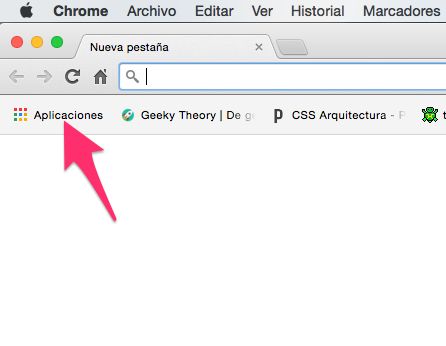
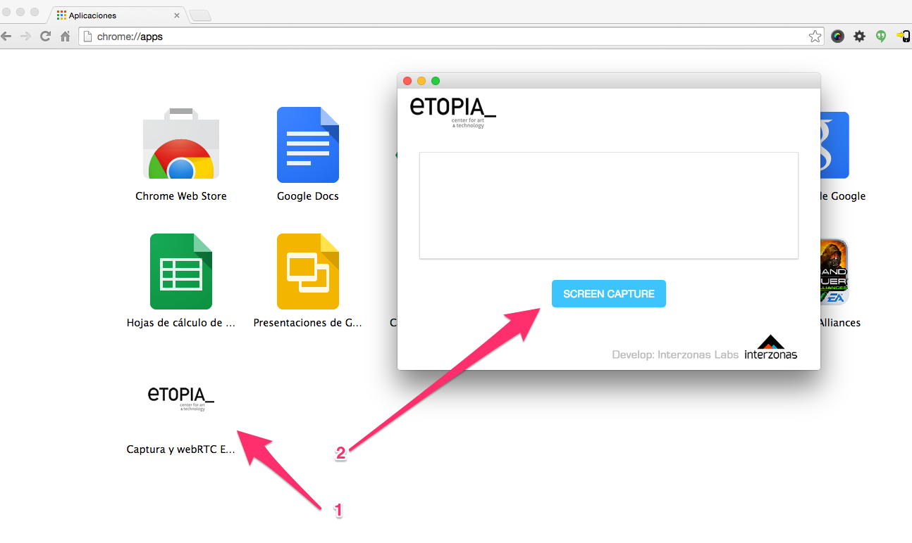
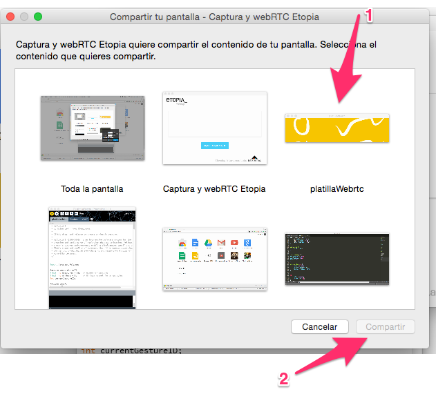
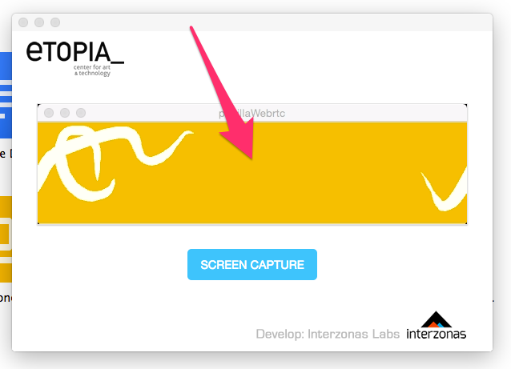

Desde el navegador Google Chrome vamos a Chrome store e instalamos la aplicación.
Desde el navegador Google Chrome hacemos click en aplicaciones y veremos el icono de Etopia.
Hacemos click en el icono de la aplicación (1), a continuación se nos abrira la ventana de selección de pantalla, donde pulsamos el botón "Screen capture" (2)
Aquí seleccionamos el contenido de la pantalla que queremos compartir y pulsamos el botón "compartir" (2)
La ventana ya muestra nuestro contenido y estamos conectados a Etopia :)
